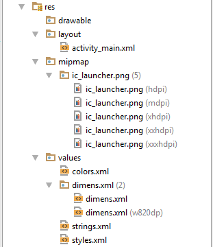

res:
Contains all non-code resources, such as XML layouts, UI strings, and bitmap images, divided into corresponding sub-directories.

Some of the examples of resource types are:
- Animation Resources
Define pre-determined animations.
Tween animations are saved in res/anim/ and accessed from the R.anim class.
Frame animations are saved in res/drawable/ and accessed from the R.drawable class.
- Color State List Resource
Define a color resources that changes based on the View state.
Saved in res/color/ and accessed from the R.color class.
- Drawable Resources
Define various graphics with bitmaps or XML.
Saved in res/drawable/ and accessed from the R.drawable class.
- Layout Resource
Define the layout for your application UI.
Saved in res/layout/ and accessed from the R.layout class.
- Menu Resource
Define the contents of your application menus.
Saved in res/menu/ and accessed from the R.menu class.
- String Resources
Define strings, string arrays, and plurals (and include string formatting and styling).
Saved in res/values/ and accessed from the R.string, R.array, and R.plurals classes.
- Style Resource
Define the look and format for UI elements.
Saved in res/values/ and accessed from the R.style class.